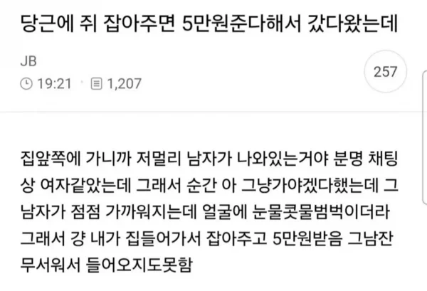

나 같아도 눈물 콧물 짜며 뛰어다녔겠다 ㅋ

나 같아도 눈물 콧물 짜며 뛰어다녔겠다 ㅋ
헐 감염된 거 아냐?
생각해보니 그때는 별생각 없었는데 감염을 생각했어야 했네 걍 피 좀 나고 맒
쥐 싫어하는 사람은 진짜 싫어하더라
바퀴벌레는 시발 존나 무서운데 쥐는 더러워서 그렇지 장갑 끼고 때려잡기 가능.
물리면 큰일날수도 있어 ㅋㅋ
대형 고기집알바할때 평소엔 존버타다 손님 밥먹을때만 까꿍하고 튀는 시궁쥐가 있었음(컴플레인 뒤짐)
나왔다 들어갔다 나왔다 들어갔다 나왔다 들어갔다
혈압 만땅채우는 만랩시궁쥐
철창 쥐덫,물양동이 트랩 실패하고
덫 먹이가 문젠가 싶어서
24시간 갓훈제 끝난 야들야들한 오리고기 끈끈이 트랩에 잡힘
산채로 불때는 아궁이에 넣었는데 역한냄새 어마무시하더라
잡고 넣을때까지는 별생각없었는데 냄새 맡는순간
너무 했나 싶기도하고 쥐이야기만 들리면 그때 생각이 계속남
배따고 넣었어야지 ㅋ
끈끈이 본드냄새였을수도??
이게맞다 ㅋㅋ 생화학물질 본드 환경호르몬 100배 이벤트 다이옥신 포름알데히드 처마심 ㅅㄱ
쓰레기봉투에 넣지 그걸왜 태워
군대 훈련소 화장실에서 몸통만 손바닥만한 쥐 튀어나오니깐 건강한 남자들이 계집아이같은 비명을 지르면서 혼비백산 하던게 기억나네
흑사병 시대도 아닌데, 왜 쥐를 무서워하지?
두더지도 사람 물고 사라지는데 그보다 큰 쥐라면...
쥐한테는 쥐벼룩이라는게 있음.
흑사병
ㅈㄹ그것때문에 무서워하는 거 아니잖아
시궁쥐도 얼굴만 보면 나름 귀엽게 생김
꼬리가 징그러워서 그렇지
래트는 키우기도 하니깐
시궁쥐는 조금 징그럽고,
들쥐가 진짜 존나게 귀엽게 생김
난 벌레는 기겁하는데 쥐는 잡겠던데?
회사에 쥐나와서 여직원들 소리지르고 난리났길래 쥐 쫒아가서 발로차서 구석에 몰아넣고 휴지통 엎어서 잡음ㅋㅋㅋㅋ 바퀴벌레는 쳐다보기만해도 온몸소름 돋음
뭔가 포유류는 이새끼가 뭔 생각을 하는지 대충 알겠는데
곤충 이 씹싸패새끼들은 뭔 생각을 하는지 모르겠음
그냥 쥐는 잡겠는데 끈끈이에 잡힌 쥐는 못건들겠더라 아우
울 할매는 끈끈이 그대로 반으로 접은다음에 태우시더라 ㅋㅋ 새끼쥐는 닭모이로 주고
쥐는 하나도 안무서움 근데 재빨라서 잡기가 힘들지
쥐만한 바퀴벌래면 진짜 눈물 콧물 범벅 될 자신있음
회사가 시골이라 들쥐 두번정도 봤는데 하수구에 사는 까만쥐 말고 갈색빛 도는 들쥐는 귀엽던데ㅋㅋㅋ
근데 얼굴만 귀엽고 꼬리 미끈하게 긴거는 좀 징그럽긴하더라
난 쥐는 당연히 찍찍 하고 우는 줄 알았는데 처음 끈끈이로 잡힌거 보니까
끼에엑 하고 ㅈㄴ 무섭게 울더라
심장 ㅈㄴ 뛰는게 느껴질 정도로 소름 돋았음
쥐 ㅈㄴ 소름돋긴함
내가 사는집에서 갑자기 튀어나오면 ㅈㄴ 무서울것같긴함
바퀴에 비하면 귀야울듯
ㅋㅋㅋㅋㅋㅋㅋㅋㅋㅋㅋ 눈물 콧물 범벅ㅋㅋㅋㅋ
친구썰인데 대학때 원룸자취방에서 롤하는데 갑자기 쿵!!!! 쿵!!! 하는 소리나고 남자 비명소리 들리길래 건물 무너지는줄 알고 나왔는데
알고보니까 등치 존나큰 체대 역도 하는 학생이 바퀴벌레보고 놀라서 들고있던 20키로 덤밸로 내리찍었다더라
집주인한테 바닥 박살났다고 존나 털렸다고함ㅋㅋ
끈끈이 잡히면 진짜 오랜시간 살아있다가 고통스럽게 죽어서 유럽에선 동물보호법 위반 걸렸다더라
그래서 내가 함정으로 잡은 불쌍한 사냥감이라 생각하고 깔끔하게 신문지로 돌돌 말아서 비닐봉지에 넣은다음 집에 있는 나무 배트로 머가리 두번 찍어서 보내줌
쥐 몇시간이면 죽을텐데
물론 쥐에겐 되게 긴 시간이겠지만
바퀴벌레는 힘으로 터트리면 숭한꼴 안보고 끝낼수있는데 쥐는 터트리는 순간 지옥이잖아.. 전문가가 필요해...
쥐 귀엽던데 바퀴취급당하는거 불쌍해
쥐 뱀 비둘기 지렁이 뭐 다 안무서움
바퀴벌레 <— 이새끼가 1황임. 젤 무서움. 반경 10m 이내에도 못감ㅠㅠ 제발 멸종해줘 바퀴벌레들아
파충류 키워라 ㅋㅋㅋ 그정도면
아냐 바퀴벌래는 그래도 애프킬라로 조지면 바로 1초컷인데 쥐는 씨발 뇌정지온다. 어쩌지? 119 불러야 하나? 생각듦

군대에서 침상 구석에 있는 쓰레받이로 쥐 한대 때리니까 한방에 뒤졌는데 꼬추 끝에 존나 노란 오줌방울 하나 맺히더니 침상 바닥에 똑 떨어짐
물티슈 졸라 뽑아서 거기 닦았는데 이후로 전역할때까지 거기는 안밟았음
gay
저정도면 좆냥이를 기르셔야
섹스각이잖아
나도 군대에서 끈끈이로 잡았는데 어떡해야할지를 몰라서 간부한테 물어보니까
페인트 통에 넣고 함마로 치라더라
첨엔 오! 하고 가서 했는데 통 구겨지면서 틈 사이로 내장 나온거보고 끔찍했었음..
아직도 좀 미안하다
군대에서 자는데 쥐한테 물러본적 있음 ㅋㅋㅋ